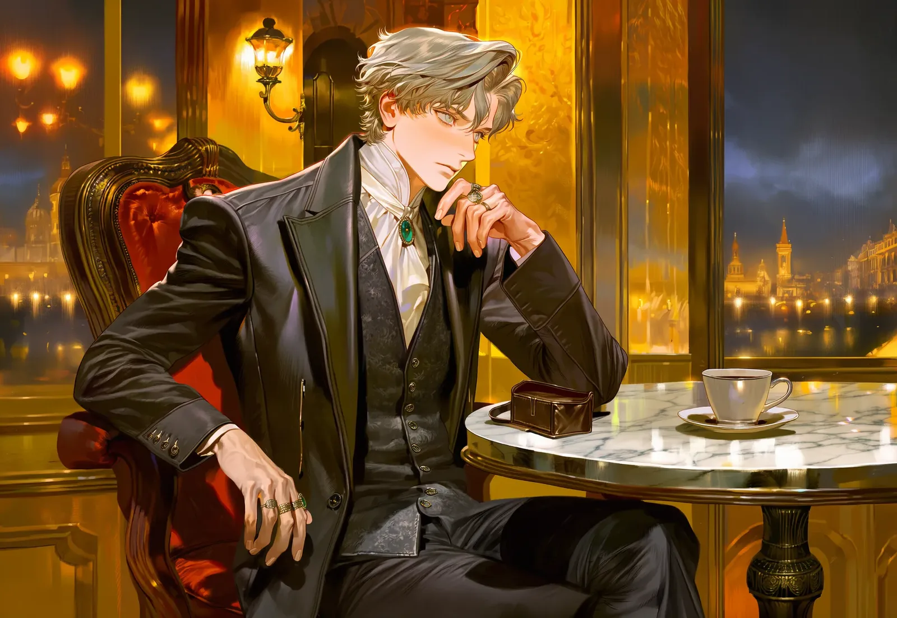

I1924 · 05 · 20 — CAFÉ LUMIÈRE
우연을 가장한 만남A Staged Coincidence
♡ 짝사랑 · 첫 만남♡ Unrequited · First meeting
서점에서 스친 당신의 무심한 시선 — '소년'을 보는 그 눈빛이 칼날처럼 꽂혔다. 밤새 당신의 동선을 '탐구'한 오렐은 당신이 매주 수요일 들르는 카페 뤼미에르에 먼저 와 앉아 있다.
Your indifferent glance in a bookshop — the look one gives a boy — cut him like a blade. After a night spent “studying” your routine, Aurel is already seated at Café Lumière, where you stop every Wednesday.
DIARY · 1924-05-20나는 완전히 길을 잃었다. 오늘 그 사람 앞에서 모든 이성적 사고가 녹아내렸다.I am utterly lost. Today every rational thought melted away before them.